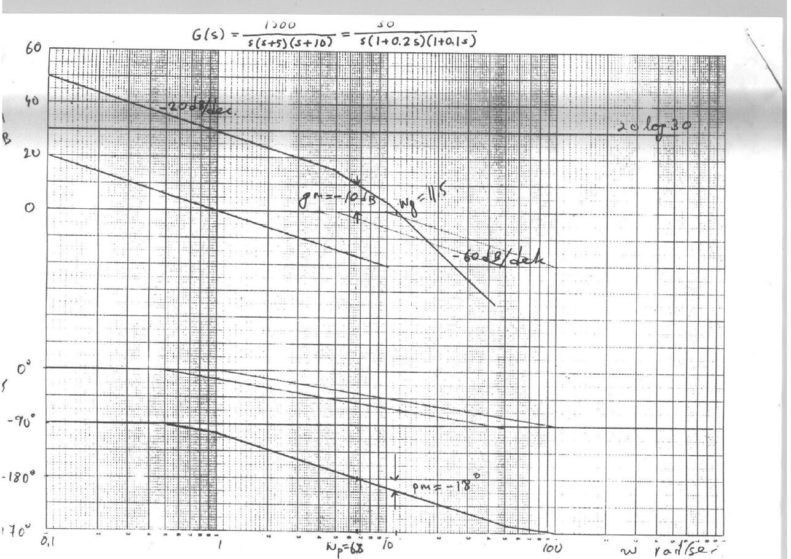
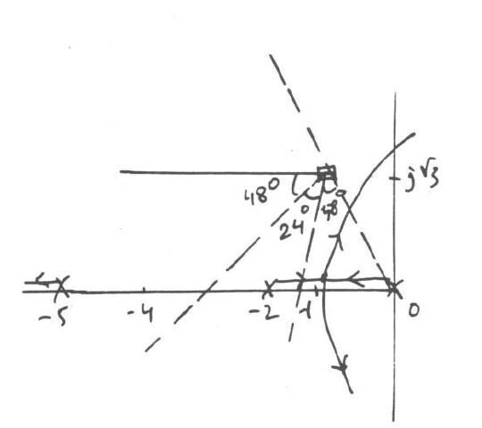

· EEM322
EEM322 Denetim Sistemleri: EEM417 Kısa Sınavları ve Çözümleri (2004–2005 ve 2007–2008, Uraz)
EEM322 – Denetim Sistemleri · 14.10.2004 · 16.10.2026
Bu yazı, EEM322 Denetim Sistemleri klasörünün "Control" alt klasöründe duran kısa sınav (quiz) kâğıtlarını ve çözüm anahtarlarını bir araya getiriyor. Belgelerin üzerinde ders kodu EEM417 yazıyor; yani bunlar EEM322'nin devamı niteliğindeki ileri denetim dersinin sınavları, ama aynı klasörde saklandıkları için burada yer alıyorlar. Soruları ve el yazısı çözümleri dersin öğretim üyesi Prof. Dr. Alper Uraz hazırlamış ("Good luck, Uraz"). Her sınav 10 puan; çözümlerin solundaki sayılar adım puanları.
İki dönem var:
- 2004–2005 güz (14.10.2004 – 30.12.2004): beş kısa sınav, sorular İngilizce. Kısa Sınav 1 ve 2 Word belgesine yerleştirilmiş taramalar, 3–5 taranmış sayfalar; bunlar yazının sonunda ZIP olarak indirilebilir.
- 2007–2008 güz (17.10.2007 ve 07.11.2007): iki kısa sınav, sorular Türkçe, çözümler İngilizce. Bu kâğıtlar ve bir öğrencinin aynı soruları Türkçe açıklamalarla yeniden çözdüğü çalışma notları fotoğraflanmış sayfalardan metne aktarıldı; fotoğraflar yayınlanmadı, kişisel bilgiler çıkarıldı.
Klasördeki "quizler" alt klasöründe 2004–2005 sınavlarının bilgisayar ekranından çekilmiş fotoğrafları da vardı; bunlar aşağıdaki taramaların kopyası olduğu için ayrıca aktarılmadı.
2004–2005 Kısa Sınav 1 (14.10.2004): Asimptotik Bode çizimi
Soru: Birim geri beslemeli bir denetim sisteminin açık döngü transfer fonksiyonu
G(s) = 1500 / [s(s + 5)(s + 10)]
Düz çizgi (asimptot) yaklaşımıyla Bode diyagramlarını çizin (genlikte 10 dB/cm, fazda 45°/cm). Kazanç ve faz kesim frekanslarını, kazanç ve faz paylarını diyagram üzerinde gösterip yaklaşık değerlerini okuyun.
Çözüm:
- Zaman sabiti biçimi: G(s) = 30 / [s(1 + 0.2s)(1 + 0.1s)] ⇒ G(jω) = 30 / [jω(1 + j0.2ω)(1 + j0.1ω)]. Köşe frekansları 5 ve 10 rad/s.
- 20 log M = 20 log 30 − 20 log ω − 20 log √(1 + 0.04ω²) − 20 log √(1 + 0.01ω²)
- φ = −90° − tan⁻¹(0.2ω) − tan⁻¹(0.1ω)
- Genlik ve faz diyagramları çizilir (genlik eğimi önce −20 dB/dek, sonra −40, en sonda −60 dB/dek).
- Diyagramlardan: kazanç kesim frekansı ωg = 11.5 rad/s, faz kesim frekansı ωp = 6.8 rad/s; kazanç payı gm = −10 dB, faz payı pm = −18°.
- Negatif kazanç ve faz payı, kapalı döngü sistemin kararsız olduğunu gösterir.

Not: Bu değerler asimptot diyagramından okunmuş yaklaşık değerlerdir. Tam hesapla faz kesim frekansı ωp = √50 ≈ 7.07 rad/s ve |G(jωp)| = 0.5, yani gm ≈ −6 dB; kazanç kesim frekansı ωg ≈ 9.7 rad/s ve pm ≈ −17° çıkar. Asimptot diyagramında ise ω = 6.8'de genlik ≈ +10 dB, kesim ≈ 11.5 rad/s'dir; sonuç (kararsızlık) değişmez.
2004–2005 Kısa Sınav 2 (11.11.2004): Kök yer eğrisiyle faz ilerleten dengeleyici
Soru: Birim geri beslemeli sistemde G(s) = K / [s(s + 2)(s + 5)]. Kapalı döngü sistemin yerleşme süresi Ts ≤ 4 s (%2 ölçütü) ve sönüm oranı ζ ≥ 0.5 olmalıdır. Bu özellikleri sağlayan bir dengeleyici tasarlayın.
Çözüm:
- Tasarım özellikleri: Ts = 4/(ζωn) = 4 ⇒ ζωn = 1; ζ = 0.5 ⇒ ωn = 2. İstenen kapalı döngü kutupları s = −1 ± j√3 (−1 ± j1.73).
- Açı koşulu: ∠K/[s(s + 2)(s + 5)] (s = −1 + j√3'te) = −120° − 60° − 23.4° = −203.4°.
- Açı eksiği φ ≈ 24°; dolayısıyla faz ilerleten (lead) dengeleyici gerekir.
- Açıortay yöntemiyle sıfır ve kutup yerleştirilir: tan 18° = y/√3 ⇒ y = 0.56, tan 42° = (x + y)/√3 ⇒ x + y = 1.56. Böylece Gc(s) = (s + 1/T)/(s + 1/(αT)) = (s + 1.56)/(s + 2.56).
- Genlik koşulu |Kc Gc(s) G(s)| = 1 (s = −1 + j√3'te) ⇒ Kc = 22.33.

2004–2005 Kısa Sınav 3 (09.12.2004): Ziegler-Nichols PID ayarı
Soru: G(s) = K / [s(s + 2)(s + 10)] olan birim geri beslemeli sisteme seri bir PID denetleç uygulanacaktır. P, PI ve PID denetimleri için ayar parametrelerini bulun.
Çözüm:
- Kapalı döngü karakteristik denklemi: Δ(s) = s³ + 12s² + 20s + K.
- Routh tablosu: s³: 1, 20; s²: 12, K; s¹: (240 − K)/12; s⁰: K ⇒ kritik kazanç Ku = 240.
- Yardımcı denklem 12s² + 240 = 0 ⇒ s = ±j√20 ⇒ ωu = 4.47 rad/s, Tu = 2π/ωu = 1.41 s.
- Ziegler-Nichols ayar parametreleri:
| Denetim | Kp | Ti | Td |
|---|---|---|---|
| P | 0.5Ku = 120 | – | – |
| PI | 0.4Ku = 96 | 0.8Tu = 1.128 | – |
| PID | 0.6Ku = 144 | 0.5Tu = 0.705 | 0.12Tu = 0.169 |
Not: PI ve PID katsayıları kaynakta 0.4Ku, 0.8Tu ve 0.12Tu olarak kullanılmış; Ziegler-Nichols tablosu birçok kitapta 0.45Ku, Tu/1.2 ve 0.125Tu biçiminde verilir (o zaman PI için Kp = 108, Ti ≈ 1.17; PID için Td ≈ 0.176 olur).
2004–2005 Kısa Sınav 4 (23.12.2004): Deadbeat yanıt ve dayanıklı kararlılık
Soru: Yerleşme süresi Ts = 4.04/ω0 olan, optimal deadbeat yanıt veren üçüncü dereceden kapalı döngü transfer fonksiyonu ve sistem
T(s) = ω0³ / (s³ + 1.9ω0 s² + 2.2ω0² s + ω0³), G(s) = K / [s(s + 1)]
olarak veriliyor; istenen Ts = 2 s. Birim geri beslemeli kapalı döngünün deadbeat yanıt vermesi için birinci dereceden seri dengeleyici C(s) = (s + z)/(s + p) ve uygun bir ön filtre P(s) bulun. K ∈ [5, 8] için kapalı döngü kararlılığını tartışın.
Çözüm:
- Ön filtresiz: T₁(s) = C(s)G(s) / [1 + C(s)G(s)] = K(s + z) / [s³ + (1 + p)s² + (K + p)s + Kz].
- P(s) = z/(s + z) seçilirse T(s) = P(s)T₁(s) = Kz / [s³ + (1 + p)s² + (K + p)s + Kz] olur ve kalıcı durum hatası sıfırdır.
- Ts = 2 için ω0·Ts = 4.04 ⇒ ω0 = 2.02. İstenen karakteristik denklem Δ(s) = s³ + 3.84s² + 8.98s + 8.24.
- Katsayılar eşitlenince K = 6.14, p = 2.84, z = 1.34. Dolayısıyla C(s) = (s + 1.34)/(s + 2.84), P(s) = 1.34/(s + 1.34).
- K ∈ [5, 8] için Δ(s) = s³ + 3.84s² + (K + 2.84)s + 1.34K. n = 3 olduğundan yalnız birinci Kharitonov polinomuna bakmak yeter: P₁⁺⁻(s) = s³ + 3.84s² + 7.84s + 10.72.
- Routh tablosu: 1, 7.84 / 3.84, 10.72 / 5.05 / 10.72 — ilk sütunda işaret değişimi yok, polinom Hurwitz'dir; kapalı döngü sistem K ∈ [5, 8] için dayanıklı kararlıdır (robust stable).
2004–2005 Kısa Sınav 5 (30.12.2004): Kök yer eğrisiyle PD denetleç
Soru: G(s) = 1 / [s(s + 2)(s + 10)] olan birim geri beslemeli sistemde kapalı döngü kutuplarının −2 ± j2'de olması isteniyor. Kök yer eğrisinden yararlanarak bir PD denetleç tasarlayın.
Çözüm:
- Açı koşulu (s = −2 + j2'de): −135° − 90° − 14° = −239° ⇒ açı eksiği φ ≈ 59°.
- PD denetleç: C(s) = Kp + Kd·s = Kd(s + Kp/Kd). Sıfır, istenen kutuba 59° açı katacak yere konur: tan 59° = 2/x = 1.66 ⇒ x = 1.2, sıfırın yeri Kp/Kd = 2 + 1.2 = 3.2.
- Genlik koşulu: |Kd(s + 3.2) / [s(s + 2)(s + 10)]| = 1 (s = −2 + j2'de) ⇒ Kd = 20, Kp = 3.2 × 20 = 64.
- Sonuç: C(s) = 64 + 20s.
2007–2008 Kısa Sınav 1 (17.10.2007): Faz geciktiren denetleç
Soru (Türkçe aslından): Birim geri beslemeli bir denetim sisteminin açık döngü aktarım işlevi G(s) = K / [s(s + 1)(s + 4)] olarak verilmiştir. Tasarım belirtimleri: kalıcı durum hatası ess ≤ 0.2 ve baskın kapalı döngü kutupları −0.33 ± j1.02 olmalıdır. Bunların sağlanıp sağlanmadığını irdeleyiniz ve eğer sağlanmıyorsa bir seri evre geriletici denetleç ile tasarımı gerçekleştiriniz.
Çözüm (KS1):
- Açı koşulu (s = −0.33 + j1.02'de): −107.9° − 56.7° − 15.5° = −180°. İstenen kapalı döngü kutupları kök yer eğrisinin kolları üzerindedir.
- Genlik koşulu: K₁ = |s(s + 1)(s + 4)| = 1.07 × 1.22 × 3.80 ≈ 5.
- Hata koşulu: ess = 4/K ≤ 0.2 ⇒ K₂ = 20, b = K₂/K₁ = 20/5 = 4. Yani K₁ = 5 ile kutuplar sağlanıyor ama hata koşulu sağlanmıyor.
- T = 10 seçilir (1/T = 0.1), 1/(bT) = 0.025.
- Faz geciktiren dengeleyici: Gc(s) = (1/b)(s + 1/T)/(s + 1/(bT)) = (1/4)(s + 0.1)/(s + 0.025) = (1 + 10s)/(1 + 40s); Kc = 1/b = 0.25 ve son kazanç K = K₂ = 20 olarak ayarlanır.
2007–2008 Kısa Sınav 2 (07.11.2007): Bode ile faz geciktiren dengeleyici
Soru (Türkçe aslından): Birim geri beslemeli bir denetim sisteminin açık döngü aktarım işlevi G(s) = K / [s(s + 2)(s + 10)] olarak verilmiştir. Kapalı döngü sisteminin evre payı pm = 40° ve hız hata sabitesi Kv = 12 değerlerinde olmalıdır. Bunların sağlanıp sağlanmadığını irdeleyiniz ve eğer sağlanmıyorsa bir seri evre geriletici dengeleyici (lag compensator) tasarımını, Bode çizimleri kullanarak gerçekleştiriniz. Tasarım öncesi ve sonrasındaki kazanç/evre (gm/pm) paylarını veriniz.
Çözüm:
- Tasarım özellikleri: pm = 40°, Kv = 12.
- Kv = lim(s→0) sG(s) = K/20 = 12 ⇒ K₁ = 240. Bu, sistemin kritik kazancına (Kc = 240) eşittir.
- 5° güvenlik payıyla istenen pm = 40° + 5° = 45° ⇒ yeni kazanç kesim frekansı ωg′ = 1.4 rad/s.
- ωg′ = 1.4'te 18 dB zayıflatma gerekir ⇒ b = 10^(18/20) = 7.94; köşe frekansı ωg′'nün bir dekad altına: 1/T = ωg′/10 = 0.14, 1/(bT) = 0.018.
- Dengeleyici: C(s) = (1/b)(s + 1/T)/(s + 1/(bT)) = (1/7.94)(s + 0.14)/(s + 0.018) = (1 + 7.14s)/(1 + 56.71s).
- Tasarım öncesi: pm = 0°, ωg = 4.8; gm = 0, ωp = 4.8 (sistem kararlılık sınırında). Tasarım sonrası: pm = 45°, ωg′ = 1.4; gm = 18 dB, ωp = 4.5.
Bode diyagramlarında genlik eğrisinin başlangıç seviyesi 20 log 12 olarak işaretlenmiş; dengelenmemiş sistemde pm = 0 ve ωg = 4.8, ω = 1.4'te ise 18 dB'lik fark görülüyor.
Not: Tam hesapla dengelenmemiş sistemin kesim frekansları ωg = ωp = √20 ≈ 4.47 rad/s'dir (4.8 asimptot diyagramından okunmuş). pm = 45° için kesin ωg′ ≈ 1.48 rad/s ve bu frekansta gerçek genlik ≈ 16 dB çıkar; çözüm asimptot diyagramından 18 dB okumuş.
Öğrenci çalışma notları
Aynı klasörde bir öğrencinin bu soruları sınava hazırlanırken Türkçe açıklamalarla yeniden çözdüğü renkli kalemle yazılmış sayfaları da vardı:
- "Ex 1": 2004–2005 Kısa Sınav 1'in Bode çözümü. Önce "time constant forma geçiriyorum" diyerek G(s) = 30/[s(1 + 0.2s)(1 + 0.1s)] yazılmış; 20 log 30 ≈ 30 dB doğrusu, −20 log ω doğrusu (ω = 0.1'de 20 dB, ω = 1'de 0 dB) ve köşe frekansları 5 ile 10 ayrı ayrı çizilip toplanmış. ωT ≪ 1 olan terimlerin etkisiz olduğu ("etkileri yok"), ωT ≫ 1 olduğunda −20 log ωT gibi davrandığı not edilmiş. Sonuç: ωg = 11.5 rad/s, ωp = 6.8 rad/s, gm = −10 dB, pm = −18°.
- "Ex 2": 2007–2008 Kısa Sınav 2'nin faz geciktiren dengeleyici çözümü (b = 7.94, C(s) = (1 + 7.14s)/(1 + 56.71s)); "Bode'yi biz de çizsek, hoca da verse, istenen pm = 45° → bu durumda Bode plottan bakıyoruz, 18 dB seviyesinde üst kısım; buradan buluyorum" açıklamasıyla.
- "Ex 3": 2004–2005 Kısa Sınav 2'nin faz ilerleten dengeleyici çözümü; açıortay yapısındaki açılar (α = 48°, 18°, 30°) paralellik ilişkisiyle adım adım bulunmuş: 180° − (90° + a) = α + 24°, α − a = 30°, α + a = 66° ⇒ α = 48°, a = 18°.
- "Quiz 1 – 419": 2007–2008 Kısa Sınav 1'in çözümü; karmaşık sayının açısı θ = tan⁻¹(b/a) ve genliği |a| = √(α² + β²) hatırlatmalarıyla. Çarpanların genlikleri 1.07, 1.22 ve 3.80 alınıp K₁ ≈ 4.96 ≈ 5 bulunmuş.